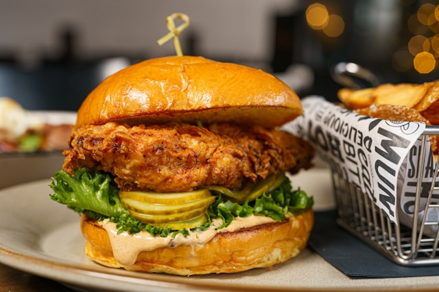

Home
Chicken Burger

Description
A chicken burger—primarily known as a chicken sandwich in the United States and Canada—is a sandwich consisting of a cooked chicken breast, thigh, or a minced chicken patty served between slices of bread or within a hamburger bun.
Ingredients
- Chicken breast or thigh fillets
- Buttermilk (for brining and tenderising)
- All-purpose flour (plain flour)
- Cornstarch (cornflour, for extra crunch)
- Garlic powder
- Onion powder
- Paprika (regular or smoked)
- Cayenne pepper (optional, for heat)
- Salt and black pepper
- Vegetable oil (for frying)
- Burger buns (such as brioche or sesame seed)
- Iceberg lettuce (shredded)
- Mayonnaise
- Pickle slices (gherkins)
Steps
- Slice the chicken breasts horizontally into even cutlets, or trim the chicken thighs to fit your burger buns.
- Place the chicken in a bowl and submerge it in buttermilk seasoned with salt, pepper, garlic powder, and paprika; let it marinate for at least 30 minutes.
- In a shallow dish, whisk together the all-purpose flour, cornstarch, and your dry spices (garlic powder, onion powder, paprika, cayenne pepper, salt, and pepper).
- Drizzle a few tablespoons of the buttermilk marinade into the flour mixture and rub it in with your fingers to create small clumps for extra crispy texture.
- Remove each piece of chicken from the buttermilk, let the excess drip off, and dredge it thoroughly in the flour mixture, pressing down firmly to coat completely.
- Heat vegetable oil in a deep pan or skillet to 350°F (175°C), ensuring the oil is deep enough to submerge the chicken halfway.
- Carefully lower the chicken into the hot oil and fry for 4 to 6 minutes per side, or until the crust is golden brown and the internal temperature reaches 165°F (74°C).
- Transfer the fried chicken to a wire rack or a paper-towel-lined plate to drain excess oil while keeping the crust crispy.
- Lightly toast the interior of the burger buns in a dry pan or with a smear of butter until golden brown.
- Assemble the burgers by spreading mayonnaise on the bottom bun, adding pickle slices and shredded lettuce, placing the hot fried chicken on top, and closing with the top bun.